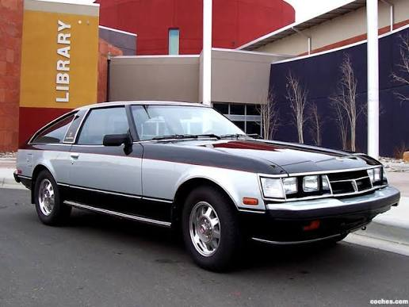
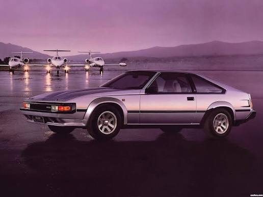
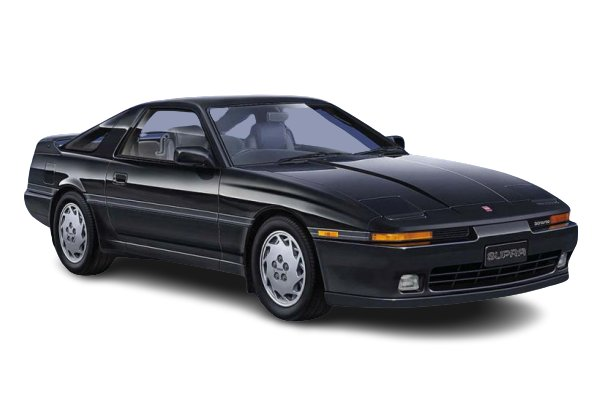
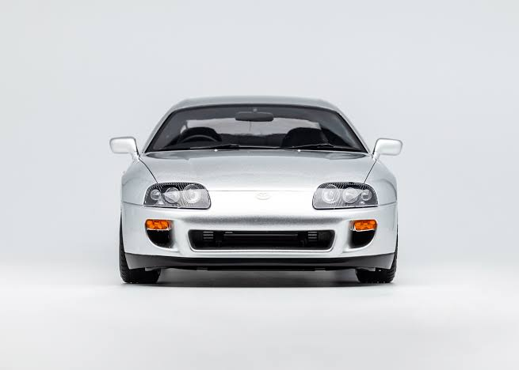
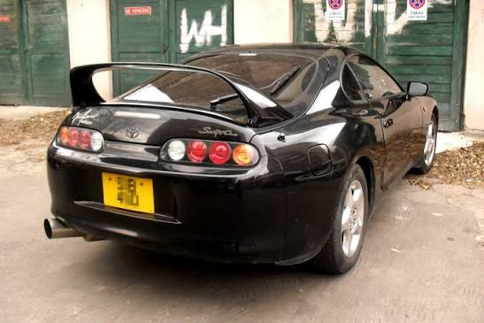
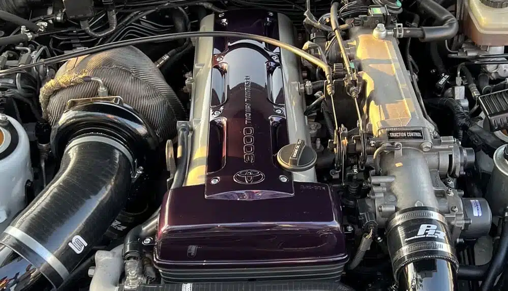
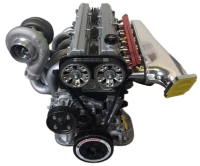
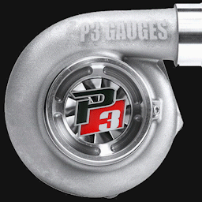
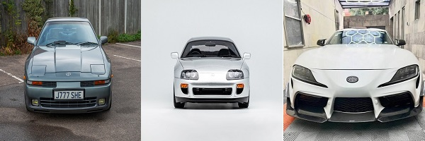

Galería del Toyota Supra
Las generaciones del Supra









Mapa de imagen: generaciones del Supra
Selecciona uno de los tres vehículos para conocer más sobre su generación.

Vídeo: la evolución del Toyota Supra
Vídeo explicativo sobre las cinco generaciones del Toyota Supra.
Contenido de audio
La historia del Toyota Supra
Narración sobre el nacimiento y la evolución del Toyota Supra.
Los motores 2JZ
Explicación de las características de los motores 2JZ-GE y 2JZ-GTE (no la encontraba en español).
Contenido externo
Vídeo de YouTube
Ver el vídeo directamente en YouTube